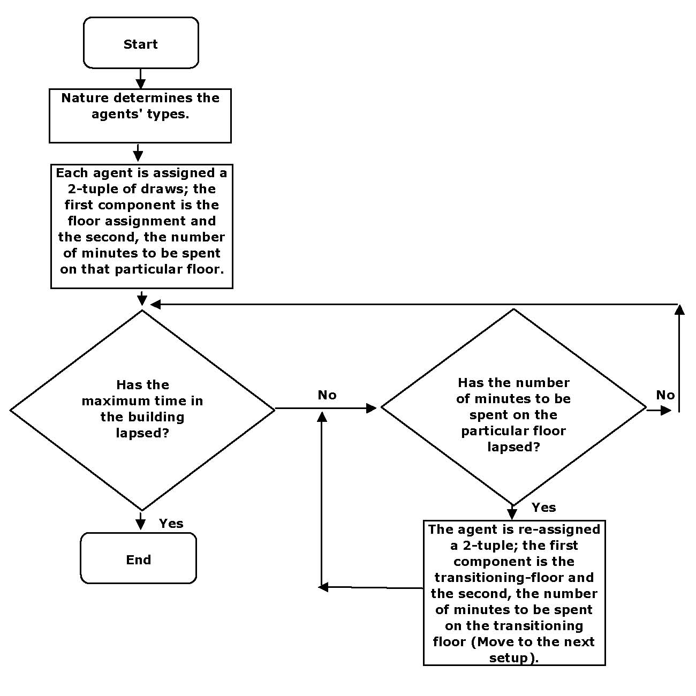
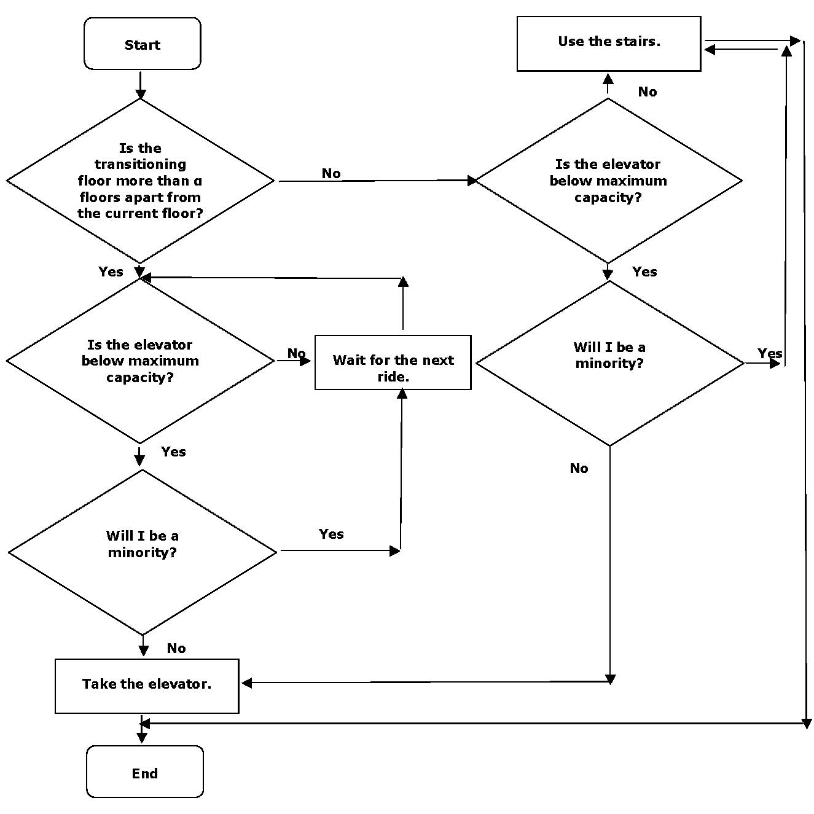
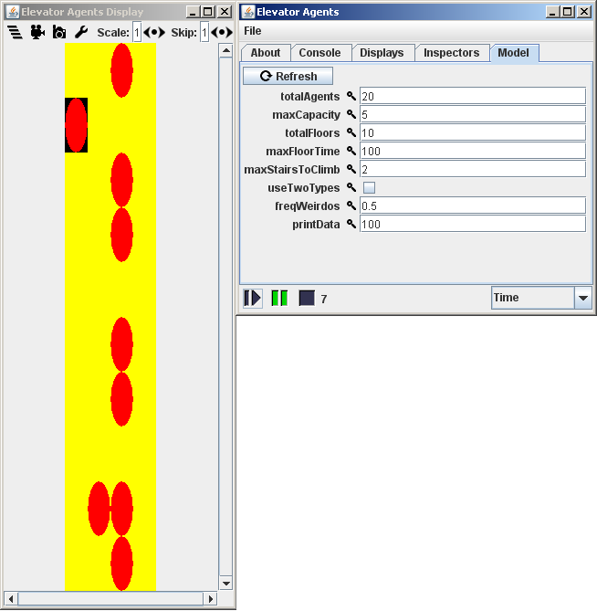
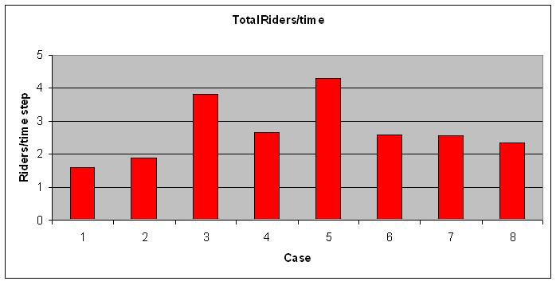
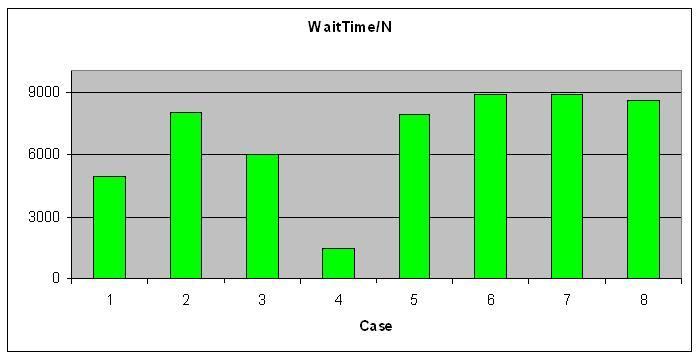
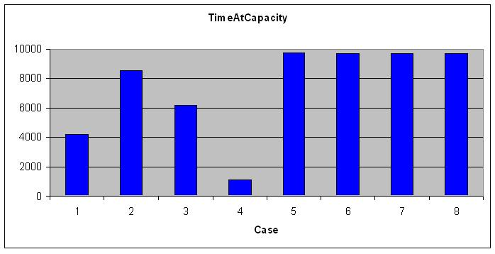

The
Homework Problem:People
enter and leave an elevator as it travels up and
down.
Model, using
whatever techniques you wish, the above
scenario.
Explicitly
state your model and key assumptions.
Summarize key results.
Suggest some potentially interesting future directions and
questions
for the model.
Suggest some standard social science scenarios
that could be
usefully modeled using such a process.
Our
Model:
N agents are
randomly assigned to a floor
in our building. They are randomly assigned a timeto be spent on that
floor, after which they head to the elevator. The elevator goes up and
down, agents never leave or enter the building, but merely go from
floor to floor. The elevator has a direction - e.g. when going up, it
keeps going up if anyone on the elevator is heading to a higher floor
or there is someone at a higher floor who has called the elevator.
The elevator travels one floor per time step, and must pause
on a floor for a time step when there is entering and/or exiting.
Agents faced with a full elevator (or a majority of "weirdos" in some
cases) can opt to take the stairs if their destination is not too many
floors away. Taking the stairs takes 2 time steps per floor.


Here is a screen grab of the Java
application.
There are rows,
representing floors. There are four columns.
The
left most is the elevator (the black square). The second is waiting for
the elevator. The third is hanging out (not waiting) on a floor. The
fourth is the stairwell.
The agents are the red circles.

And in motion:
Some
Results (ala Comparative
Statics):
| Primitives
| Case#
| 1
| 2
| 3
| 4
| 5
| 6
| 7
| 8
|
| Time In The
Building | 10,000
| 10,000
| 10,000
| 10,000
| 10,000
| 10,000
| 10,000
| 10,000
|
| Agents
| 5
| 20
| 20
| 20
| 200
| 200
| 200
| 200
|
| Maximum Capacity
| 2
| 2
| 5
| 5
| 5
| 5
| 5
| 5
|
|
| Floors
| 10
| 10
| 10
| 10
| 10
| 20
| 20
| 20
|
| Maximum Floor
Time | 10
| 10
| 10
| 100
| 100
| 100
| 100
| 100
|
| Maximum Stairs
Climbed | 2
| 2
| 2
| 2
| 2
| 2
| 2
| 5
|
| Types
| 1
| 1
| 1
| 1
| 1
| 1
| 2
| 1
|
|
|
|
|
|
|
|
|
|
|
|
| Elevator
Riders/Time |
1.593
| 1.895
| 3.823
| 2.657
| 4.287
| 2.608
| 2.572
| 2.339
|
|
|
|
|
|
|
|
|
|
|
|
| Total Waiting
Time/Agents |
4894.2
| 7978.25
| 5989.65
| 1469.8
| 7867.865
| 8862.845
| 8881.765
| 8587.8
|
|
|
|
|
|
|
|
|
|
|
|
| Time Elevator
at Max Capacity
| 4196
| 8525
| 6165
| 1162
| 9727
| 9652
| 9655
| 9652
|
We ran
the simulation and varied
a number of parameters, each in turn.
These values represent
the data from a single run for each of the set of parameter values,
however, we ran a number of configurations 3 or 4 times, and the
results were very similar. Therefore, we assume these data to be
representative of the model's output.
Average Number of Elevator Riders
per Time Step:
Predictably,
this tended to be lower when there were fewer agents. There is an
obvious increase when the capacity of the elevator is increased, and
again when the number of agents is increased. Increasing the amount of
time spent of the floors also predictable lowered this statistic.
Increasing the number of floors lowered the average number of riders,
likely because agents were now traveling farther, and the elevator was
at capacity for more stops.

Average
Wait Time:
This is the sum of the number of time
steps each agent was waiting for the elevator, divided by the number of
agents. We think this is an interesting statistic by which to measure
elevator performance.
We see an increase when the number of
agents jumps from 5 to 20, indicating that the role of the
full-to-capacity elevator is coming into play. An increase in capacity
helps to alleviate the average wait time, as does the amount of time
spent on the floor (and therefore not on or waiting for the elevator).
Once
the number of agents is increased to 200, the wait time goes up again.
Further changes, such as increasing the number of floors, have
a very small effect. It is likely that this is a ceiling effect - the
elevator is so often full that most agents spend most of their time
waiting. 
Time at Maximum
Capacity:
This is the number of time steps in
which the elevator is completely full. It is clearly very related to
the average wait time, as the charts look very similar. Notice that
once the population of the building is increased to 200 agents, the
elevator is almost always full - over 96% of the time. Again, this is
likely a ceiling effect. In order to reduce these last two statistics,
we would recommend increasing the capacity of the elevator and/or
increasing the average time spent on the floor. From the
combination of the three charts, it appears that the elevator runs the
most smoothly in Case 4, when there is ample time spent on the floor
and a large capacity compared to the number of agents..

"Weirdos":Allowing
for two types to discriminate against one another did not seem to have
any effect on the operation of the elevator. To insure this wasn't a
result of a ceiling effect, we ran the simulation with two types with
all the other parameters of Case 4, our most efficient case. It had no
noticable effect on the data.
Stairs:
Increasing
the maximum number of stairs an agent will walk from 2 to 5 during Case
4 did yield a small but likely significant decrease in both Wait Time
and Time at Maximum Capacity.
Future
Directions
- Instead of an agent simply calling the elevator,
pressing the specific floor could aid optimization.
- Multiple
elevators, perhaps with an assignment of floors such as those found in
large buildings.
- Futher investigation of
types & preferences. For example, imagine types who prefer crowded
elevators.
- Allowing people to enter and leave the
building, perhaps even on a daily cycle where everyone enters in the
morning and leaves in the evening.
- Investigation of
groups of agents who want to travel together.
- A
more dynamic function for taking the stairs. Perhaps the longer an
agent waits, the more stairs she is willing to climb.
- Reacting
to crowds waiting for the elevator.
- Adaptive
agents: learning what strategies or stairs and waiting works best.
- More
probable patterns of travel. Most people will get on and off at ground
floor. Further, in certain buildings, other floors are hotspots, and
people from one floor might be more likely to go to another. E.g. in a
department store, people getting on at Women's Shoes will be more
likely to go to Cosmetics than people getting on at Men's Athletic
Wear.
Some Social
Science Scenarios To Which This Model Could Apply:- Transportation:
bus & train line traffic.
- With multiple
elevators, interesting type preferences, & adaptive agents: the
formation of social cliques.
- Emergence of
selective migration - if a population adapted to an equilibrium by
always or never taking the stairs.
Notes: